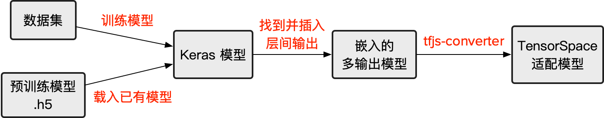
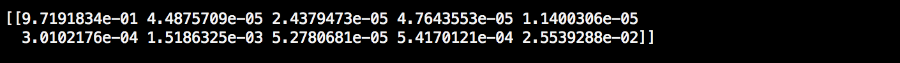
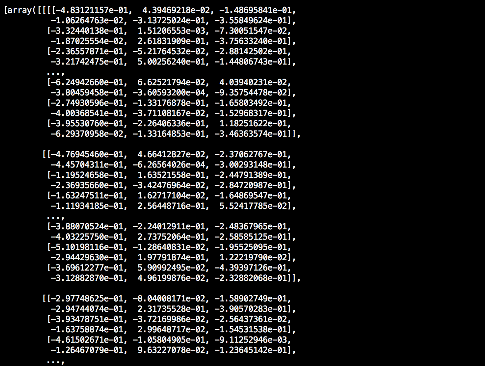

本篇将介绍如何预处理基于 Keras 搭建的神经网络模型，以此来适配 TensorSpace 所需要的拥有中间层输出的模型。如果您之前已经了解过 tf.keras 模型预处理，您将会发现两篇教程拥有许多相似之处。
以下为本篇教程所使用的代码及模型文件：
filter_center_focus
keras_model.py
filter_center_focus
convert_keras.sh
filter_center_focus
模型
运行环境：Python 3.6.5。相关依赖如下：
import tensorflow as tf
import numpy as np
from keras.models import Sequential, Model
from keras.layers import Dense, Input, InputLayer, Conv2D, MaxPooling2D, Reshape, Flatten
from keras.models import load_modelwb_sunny注意：
filter_center_focus
keras 与 numpy 为核心库。.
filter_center_focus
tf.keras 只用于提供训练所需要的数据集。
此外，我们还需要安装 tfjs-converter (基于 TensorFlow.js 的转换工具)：
$ pip install tensorflowjs安装完成后，tensorflowjs_converter 变为系统可用关键字，可用下列命令来调用：
$ tensorflowjs_converter \
--input_format=tf_saved_model \
--output_node_names=$onn \
--saved_model_tags=serve \
../models/tensorflow_model \
../models/json_models/tensorflow预处理 Keras 模型，包含如下图所示的几个步骤：

图1 - 预处理 Keras 模型的步骤
filter_center_focus
1. 训练/加载模型
filter_center_focus
2. 添加中间层输出
filter_center_focus
3. 保存嵌入后的多输出模型
filter_center_focus
4. 转换为 TensorSpace 适配的模型
在本教程中，我们将使用 MNIST 数据集和 LeNet 神经网络结构来构建一个 Keras 模型。
1 训练/加载模型
1.1 训练新模型
如果您目前还没有可以马上直接使用的 Keras 模型，您可以按照本小节的方法构筑一个新的样例模型。
根据 LeNet 的网络结构：

图2 - LeNet 网络结构
我们可以用以下代码迅速搭建其网络结构。
〔源码〕keras_model.py
def create_sequential_model():
single_output_model = Sequential([
InputLayer(input_shape=(28, 28)),
Reshape((28,28,1),input_shape=(28,28,)),
Conv2D(filters=6, kernel_size=5, strides=1, input_shape=(28, 28, 1), name="Conv2D_1"),
MaxPooling2D(pool_size=(2, 2), strides=(2, 2), name="MaxPooling2D_1"),
Conv2D(filters=16, kernel_size=5, strides=1, name="Conv2D_2"),
MaxPooling2D(pool_size=(2, 2), strides=(2, 2), name="MaxPooling2D_2"),
Flatten(),
Dense(120, activation="relu", name="Dense_1"),
Dense(84, activation="relu", name="Dense_2"),
Dense(10, activation="softmax", name="Softmax")
])
return single_output_modelwb_sunny注意：
- filter_center_focus 为所有我们想展示的网络层均添加了 “name” 属性。
- filter_center_focus Keras 的官方教程能更好的帮助你学习并使用 Keras。
完成网络结构的构筑之后，使用 MNIST 数据集训练模型。
〔源码〕keras_model.py
(x_train, y_train), (x_test, y_test) = mnist.load_data()
x_train, x_test = x_train / 255.0, x_test / 255.0
model.compile(optimizer='adam',
loss='sparse_categorical_crossentropy',
metrics=['accuracy'])
model.fit(x_train, y_train, epochs=5, batch_size=32)在训练完成之后，我们应当得到一个具有完整结构及一定训练程度的 Keras 神经网络模型。通过以下代码测试模型。
〔源码〕keras_model.py
input_sample = np.ndarray(shape=(28,28), buffer=np.random.rand(28,28))
input_sample = np.expand_dims(input_sample, axis=0)
print(model.predict(input_sample))如下图所示，得到单一预测结果：

图3 - 新 Keras 模型的单一预测结果
1.2 加载已有模型
有预训练模型，使用以下代码加载：
model = load_model("/PATH_TO_Keras/model.h5")或者若该模型的结构与权重为分开保存格式，用以下代码加载：
json_path = "PATH_TO_JSON/model.json"
weight_path = "PATH_TO_WEIGHT/weights.hdf5"
structure = open(json_path, "r")
model = model_from_json(
structure
)
model.load_weights(weight_path)使用以下验证模型可用性：
〔源码〕keras_model.py
input_sample = np.ndarray(shape=(28,28), buffer=np.random.rand(28,28))
input_sample = np.expand_dims(input_sample, axis=0)
print(model.predict(input_sample))如下图所示，得到单一预测结果：
图4 - 加载 Keras 预训练模型得到的单一预测结果
2 添加中间层输出
第一步，获得中间层信息
使用 summary() 方法来得到中间层信息（layer.name）。也可通过 layer 对象直接获取：
model.summary()
for layer in model.layers:
print(layer.name)
图5 - 中间层信息输出
wb_sunny注意：
filter_center_focus
若在之前的步骤中已经设置了恰当的 name 属性，可快速找到对应层的位置。
filter_center_focus
若该模型是加载预训练模型得到，大多数情况下，中间层名称应与其所对应的类相关。
基于以上信息，我们可以迅速得出 LeNet 的基本结构： LeNet 先有两对 Conv2D + MaxPooling 层的组合，然后紧接一层 Flatten 层，最终进行3层 Dense。
第二步，提取中间层并添加到新模型中
可通过以下方法提取我们所需要的中间层，并将其添加到我们新创建的模型中。
〔源码〕keras_model.py
output_layer_names = [
"Conv2D_1", "MaxPooling2D_1", "Conv2D_2", "MaxPooling2D_2",
"Dense_1", "Dense_2", "Softmax"
]
def generate_encapsulate_model_with_output_layer_names(model, output_layer_names):
enc_model = Model(
inputs=model.input,
outputs=list(map(lambda oln: model.get_layer(oln).output, output_layer_names))
)
return enc_model或者可用以下方式添加所有中间层。
〔源码〕keras_model.py
def generate_encapsulate_model(model):
enc_model = Model(
inputs=model.input,
# ignore 1st layer (input), since some old models do not have 1st layer as Keras layer
outputs=list(map(lambda layer: layer.output, model.layers[1:]))
)
return enc_modelwb_sunny注意：
- filter_center_focus 请不要包括任何输入层（ 'input' 或是 input_layer ）。由于某些模型是由 Model() 构筑的，其输入部分并不是一个 Keras 层。
- filter_center_focus 请确认所需要的中间层并保证其顺序。
第三步，生成新的多输出模型
然后，可生成一个新的嵌入多输出模型。
〔源码〕keras_model.py
enc_model = generate_encapsulate_model_with_output_layer_names(model, output_layer_names)
# OR
# enc_model = generate_encapsulate_model(model)可使用以下语句来获得所选定的层的输出：
print(enc_model.predict(input_sample))模型应该会输出我们所选择的所有中间层输出。若选择中包含最终输出，结果也应当包括最终预测输出。

图6 - 经过预处理之后的中间层输出
最后一层的输出对应原模型的预测结果，确保它们是相同的。

图7 - 最后一层的输出与原模型预测结果一致
3 保存嵌入的多输出模型
为了进一步转换模型，我们需要保存嵌入后的多输出模型。
wb_sunny注意：
- filter_center_focus 因为我们并不需要进一步训练，所以我们并不需要编译我们的嵌入的多输出模型。
- filter_center_focus 若您希望基于该嵌入后模型继续训练，您可以加入合适的优化和损失函数。这里我们以 “adam” 和 “sparse_categorical_crossentropy” 为例。
〔源码〕keras_model.py
enc_model.compile(optimizer='adam',
loss='sparse_categorical_crossentropy',
metrics=['accuracy'])
save_model(enc_model, "/PATH_TO_NEW_MODEL/enc_model.h5")4 转换为 TensorSpace 适配的模型
最后一步是将我们先前得到的嵌入的多输出模型转换为 TensorSpace 所适配的模型。使用 tfjs-converter。
我们可以通过以下脚本来进行转换。
〔源码〕convert_keras.sh
tensorflowjs_converter \
--input_format=keras \
../models/enc_keras_model.h5 \
../models/json_models/keras
图8 - 转换后所保存的最终模型文件
wb_sunny注意：
- filter_center_focus
我们将会得到两种类型的文件
- flare 一份 model.json 文件：包含所得到的模型结构信息（包括中间层输出）
- flare 一些 权重 文件：包含模型训练所得到的权重信息。权重文件的数量取决于模型的结构。
- filter_center_focus 默认设置下，模型结构文件将命名为 model.json， 可修改名称。
- filter_center_focus 权重文件都将以 "group1-shard1of1" 的格式命名并在 model.json 声明其关联性。因此，我们建议不要更改权重文件的名称。如有情况需要修改的，请妥善修改 .json (model.json) 中的关联信息。
- filter_center_focus 点击链接以获取更多 tfjs-converter 的信息。
若至此一切顺利，可移步下一部分——
加载TensorSpace适配模型